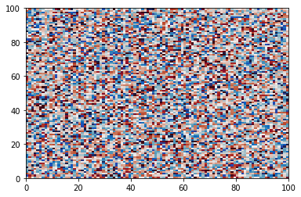

This page was generated from ../notebooks/notebook.ipynb.
Tutorial from external directory¶
This tutorial (while identical in content to the tutorial inside the docs folder) is built from the /notebooks directory that is external to the /docs directory using nbsphiinx-link. See the docs/README.md for more information about this trick!
[1]:
print('Hello, binder world!')
Hello, binder world!
Now a little more interesting¶
Do some mock analysis
[2]:
from matplotlib import pyplot as plt
import cmocean
from src import run_simulation
X = run_simulation()
fig,ax = plt.subplots()
ax.pcolormesh(X, cmap=cmocean.cm.balance, vmin=-2, vmax=2)
[2]:
<matplotlib.collections.QuadMesh at 0x7f7517de0220>
